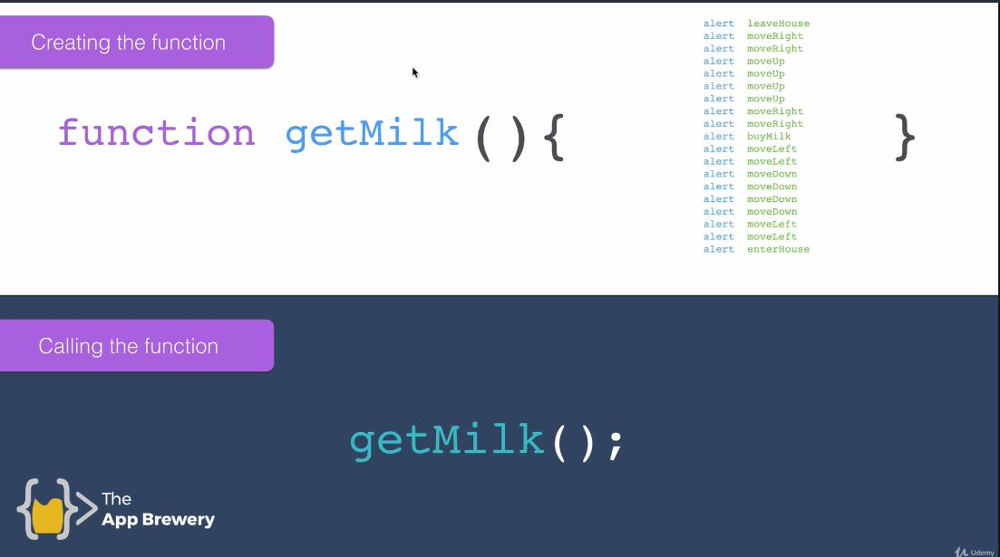
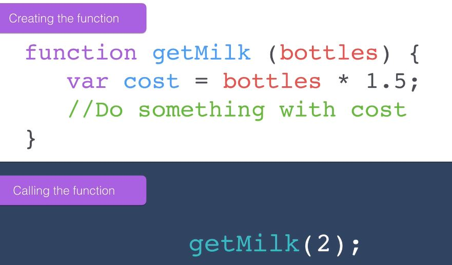
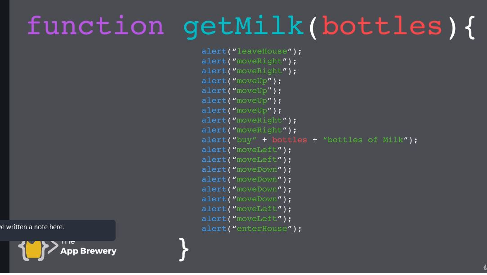

Section 9: Introduction to Javascript ES6
Writing js in the console, hold down shift for multi line.
CTRL + K will clear the console but keep the data
clear() will clear the console and data
alert()
The Window.alert() method displays an alert dialog with the optional specified content and an OK button. Dialog boxes are modal windows - they prevent the user from accessing the rest of the program's interface until the dialog box is closed. For this reason, you should not overuse any function that creates a dialog box (or modal window)

The craziest beginner exercise I've ever seen


I had to go over this a couple of times and we used buckets to visualize the solution. Using a new variable c and settings it's value to a, free'd up a to equal b which was then free'd up to equal the value held in c. Don't ask me why but it took me a while to get my head around it. See the code here
Coding isn't the hard part, the hard bit is the logic.
L109 Ex2
This was a tough one featuring concatenation and string.length. We had to write a simple program that prompts
user to enter a message (max 140 characters). Return a string like this:
You have written 6 characters, you have 134 characters left.
See the code here
L110. Slicing and Extracting Parts of a String

str.slice(x,y)
specify the slice you'd like out of the string
The index to the end of the specified portion of stringObj. The substring includes the characters up to, but not including, the character indicated by end. If this value is not specified, the substring continues to the end of stringObj. Returns a section of a string.

str.toUpperCase()
The toUpperCase() method returns the calling string value converted to uppercase (the value will be converted to a string if it isn't one).
L113. Basic Arithmetic and the Modulo Operator in Javascript
using modulo to see if even or odd
One common thing to do with conditionals is to check if a number is odd or even. If a number is evenly divisible by 2 with no remainder, then it is even. You can calculate the remainder with the modulo operator % like this num % 2 == 0. If a number divided by 2 leaves a remainder of 1, then the number is odd. You can check for this using num % 2 == 1
How Do I Remember It All ... ? BODMAS !
B Brackets first
O Orders (i.e. Powers and Square Roots, etc.)
DM Division and Multiplication (left-to-right)
AS Addition and Subtraction (left-to-right)
Order of Operations
Ex5 Here
L114. Increment and Decrement a Number with JavaScript
You can easily increment or add one to a variable with the ++ operator.
i++;
is the equivalent of
i = i + 1;
Note: The entire line becomes i++;, eliminating the need for the equal sign.
You can easily decrement or decrease a variable by one with the -- operator.
i--;
is the equivalent of
i = i - 1;
Note: The entire line becomes i--;, eliminating the need for the equal sign.
Write Reusable JavaScript with Functions
Package a bunch of instructions/code into functions which can be called. Saves you repeating common chunks of code.
In JavaScript, we can divide up our code into reusable parts called functions. You can call or invoke this function by using its name followed by parentheses, like this: functionName(); Each time the function is called it will print out the message "Hello World" on the dev console. All of the code between the curly braces will be executed every time the function is called.
Passing Values to Functions with Arguments
Parameters are variables that act as placeholders for the values that are to be input to a function when it is
called.
When a function is defined, it is typically defined along with one or more parameters. The actual values that
are input
(or "passed") into a function when it is called are known as arguments.
Here is a function with two parameters, param1 and param2:
function testFun(param1, param2) {
console.log(param1, param2);
}
Then we can call testFun: testFun("Hello", "World"); We have passed two arguments, "Hello" and "World". Inside
the
function, param1 will equal "Hello" and param2 will equal "World". Note that you could call testFun again with
different
arguments and the parameters would take on the value of the new arguments.
2nd flavor of function: accepts input
the input can be used in the code block inside the function.
Now we are not simply repeating a bunch of code in a function but can modify it. we must specify input when calling the function getMilk(2);
